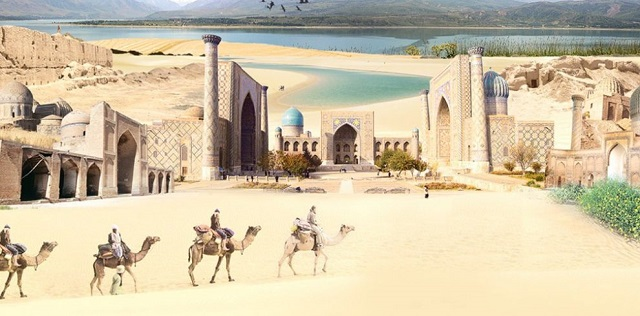

Have you decided where to spend your vacation or your free time? Want to feel the surge of positive emotions and vivid impressions. Would you like to touch the mysteries of the East, enjoy its exquisite beauty? Then all this you will feel in Uzbekistan!
Uzbekistan is known as The Heart of the Great Silk Road. The history of Uzbekistan is inseparably linked with the ancient caravan route known worldwide as the Great Silk Road. Major cities of Uzbekistan are the pearls of the "Great Silk Road".Uzbekistan has more historical places than most other countries in the world, its numerous ancient monuments, rich nature and history attracts the whole world’s attention. Definitely, it is one of the most unique and unusual destinations that is worth traveling to.
Today, Uzbekistan is a modern democratic republic with excellent service and developed tourist infrastructure. Here everyone can afford to afford the rest - whether it be the five-star comfort of first-class hotels or the comforts of boutique hotels, a sightseeing tour of the ancient cities with their countless sights, an exciting adventure in jeeps or hiking in the mountains. We are waiting for you in this hospitable Asian land!